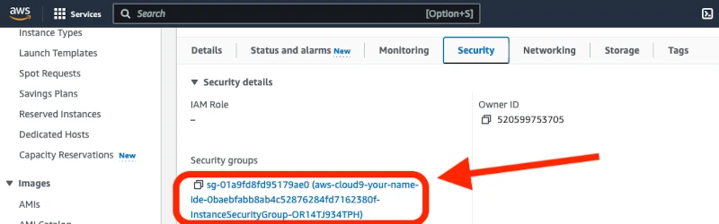

Create and Deploy a Website from your IDE to a URL
Overview
In this scenario, you were recently hired by a small startup company that for cybersecurity reasons, they want you to use an IDE in the Cloud. They want to also create a publicly available URL to share the dev website with the client.
Business Requirements
- Coding in the Cloud for security and Client URL
Project Requirements
- Create and use a Cloud coding editor - IDE (integrated development environment)
- Use the same computing resources as the IDE for the development URL web hosting solution - it doesn’t need to scale automatically
- It does need to be able to manually be scaled up
- Use AWS (Amazon Web Services) if possible
- Use Node.js for deploying the site using a server.js file
- Open necessary firewalls and ports for the website to work for clients who do not have a login to AWS
Table of Contents
- Setting up and logging in to your AWS Academy account
- Connecting to AWS Learner Lab
- AWS Cloud9 IDE (Amazon’s Cloud Coding Development Environment)
- Create the website files
- View/Preview the Site locally in your IDE
- Deploy the Site to the Internet
- Find the private IP address for the server.js file
- Open the firewalls to allow the website to work on the server
- Open port 8080 in the ACL firewall for the website
- Start the website on the internet using node and your server.js file
- Troubleshooting & Common Problems
- Learning More
-
To set up your AWS Academy account, open your email invitation from AWS Academy (notifications@instructure.com) and click Get Started.
Note: If you don’t see the email, check your junk, spam, or promotional mail folder.

-
After clicking the Get Started button, you will be redirected to a web page for creating an account or login using existing AWS Academy credentials. Please note that while the email being used is your byui.edu email, this is not your byui.edu password. You should not use the same password for AWS Academy as your byui.edu I-Learn account. AWS Academy does not utilize single sign-on services and is an entirely separate service and account from byui.edu. Unless you already have an AWS Academy account, select Create My Account. If you already have an AWS Academy account, select the I Have a Canvas Account option and use your AWS Academy credentials to login and accept the invitation to this course. Also, note the AWS Academy Learner Lab number will be different for your course than the [36035] shown below. This is NOT your I-Learn credentials. They are separate accounts.

-
After creating credentials, choose Student Login in the future and log in with your email address and password at https://awsacademy.instructure.com

-
From the LMS dashboard, choose the BYUI AWS Academy Learning Lab for the class you are accessing. Your instructor will provide a 5 digits identifier for your course to access the learner lab sandbox for your given class. Note: If you have been invited to more than one course or Lab, you will see multiple tiles on the dashboard.
-
In the navigation menu, choose Modules.
-
Choose the Learner Lab link.

-
Click Start Lab (arrow #1) and wait for the circle (arrow #2) to turn from yellow to green.
-
Once the circle is green, click AWS (arrow #2 above) and it will open a new window
-
AWS (Amazon Web Service) has Cloud 9, a coding platform that gives you an IDE (Integrated Development Environment). To use Cloud 9, login in to AWS as described previously and search for and click on Cloud 9.
-
Click Create environment to create a Cloud 9 IDE.

-
Change your region to US West by clicking on the N. Virginia near the top right corner of your browser. This will make the computer/server we will use for the IDE to be deployed in Oregon, which is physically closer to Idaho.

-
Once, Oregon is selected, choose a name for your IDE server/computer/environment:
-
Leave the default settings for t2.micro and Amazon Linux 2023.

-
Select Secure Shell (SSH) (Arrow #1) for the network settings, then click Create (Arrow #2).
-
Click on your “Open” next to your IDE environment to open it:
-
Create a new file by clicking Create File.

-
Click File in the menu and click Save. Name it index.html and make sure it is in a folder called public
-
Edit your index.html file. If you type ! and then hit tab on your keyboard it will generate some basic html.

-
Add the word test, copy some code from your previous websites, or generate some new code from ChatGPT

It might look something like this in your index.html file

-
Click on the File menu at the top of the screen and then select Save As to save your changes. Name the file and save it.

-
If you need to create a new file, click on File in the menu and select New File

-
Make sure to be in the index.html or file you want to preview.
Then, click on Tools > Preview > Preview File index.html
You should see the file on the right side as the preview

-
Create one new file called server.js that will run the node server. Make sure it is in a folder called public.

-
Use this code to deploy a Node server.js website (make sure to change the IP address of the listening port on the last line to the IP of your internal IP address of the Ec2 instance)
var http = require('http');
var fs = require('fs');
var url = require('url');
http.createServer( function (request, response) {
var pathname = url.parse(request.url).pathname;
console.log("Trying to find '" + pathname.substr(1) + "'...");
fs.readFile(pathname.substr(1), function (err, data) {
if (err) {
response.writeHead(404, {'Content-Type': 'text/html'});
response.write("ERROR: Cannot find '" + pathname.substr(1) + "'.");
console.log("ERROR: Cannot find '" + pathname.substr(1) + "'.");
} else {
console.log("Found '" + pathname.substr(1) + "'.");
response.writeHead(200, {'Content-Type': 'text/html'});
response.write(data.toString());
}
response.end();
});
}).listen(8080, '172.31.18.4'); // Or 8081 or 8082 instead of 8080. Or '127.0.0.1' instead of 'localhost'.
REFERENCE: Preview Running Applications
-
To find the IP address of the server, you need the internal IP address THAT YOU WILL PUT ON THE LAST LINE OF THE SERVER.js file. To find that, go back to the AWS webpage you were on when you opened Cloud9. Search for EC2 (EC2 is where AWS puts the servers/computers that you run, like the one you are running to use Cloud9). Click on EC2.
-
Click on Instances (running). If you don’t see any instances, make sure you are in the correct region (ex: Oregon). It should be listed at the top right of your screen in your AWS account.

-
Click on the Instance ID

-
Find the Private IPv4. That is the IP address that the internal server uses (not the internet). The internet uses the Public IP. In this example, the IP is 172.31.18.4. Your IP will be different and you need yours.
-
Click the copy icon to copy the Private IP address to put in the server.js file. You will also later need the Public IPv4 ip address to open the website - take note of it if you want to now.
-
Go back to your Cloud9 IDE, and in the last line of your server.js file, replace the IP address 172.31.18.4 with that IP address you just copied (but yours will be a different set of numbers).

On some websites, you can load them by using the public IPv4 address. You would put that IP address as the URL in your browser.
-
Open your EC2 instance and click on the Security tab
-
Click on the group listed under Security Groups, it might be something like sg-.......
 -
Click on Edit Inbound Rules
-
Click Add Rule
-
Add port 8080
-
Add the allowed IP addresses by selecting 0.0.0.0 (that means allow from anywhere)

-
Make sure to click Save Rules
-
Go back to the security groups for your aws-cloud9 instance and open the VPC by clicking on the VPC ID (ex: vpc-00061e29aa7e50c605)
-
Click on Network ACLs
-
Click on your network ACL (ex: acl-06c76d10a62371464)
-
Click Edit inbound rules
-
Click Add new rule
-
Add port 8080 to the ACL too (pick a rule number for it like 200, select Custom TCP, add port 8080, put source 0.0.0.0/0, and Allow)
-
Go back to your IDE and click Run and make sure it is running. Make sure to put the private IPv4 from your instance. MAKE SURE you are in the server.js file when you click the RUN button.
-
Now find your public IPv4 - go back to “Ec2” instances if necessary.
Take note of the Public IP from your instance and put that in your browser
-
MAKE SURE TO PUT http (NOT https) and MAKE SURE to add index.html (even though most sites don’t require the filename for an index.html)
(ex: http://35.94.121.233:8080/index.html) but yours will be a different set of numbers
-
Yours might be 54.203…. Or something different. Make sure to put the port 8080 with a colon before it. Also, make sure the filename of the .html file matches yours.
-
-
You may need to put the correct PRIVATE IP address in the server.js file on the last line of code. You also may need to open the security group port 8080 and add the port 8080 to the ACL in the VPC. Then, use the PUBLIC IP address to load the website with port 8080 at the end
-
You may need to put the file name at the end of your IP address and port
-
You may have put http://35.90.250.71:8080/ but you need to put http://35.90.250.71:8080/index.html
-
Don’t put the s on the end of http
Project Instructions
Watch the video instead: AWS Cloud9 IDE and Dev URL
Setting up and logging in to your AWS Academy account
Your instructor will create an AWS Academy course that will be used to create sandbox accounts for you as a student. This sandbox account will be an AWS account with a $100 credit assigned to you. There are no requirements for you to purchase or provision any account from AWS. You will not be required to spend any money or provide credit card information.
Your instructor has created a user account in the AWS Academy course for you. As part of the course creation, you will receive an email invitation to join the course. Please note AWS Academy uses Canvas like I-Learn; however, this is not the same Canvas account as BYUI. You will be creating new credentials in AWS Academy with your byui.edu email address. If you have previously created an AWS Academy account, you will use those AWS Academy credentials and can skip to step 3 of this section.
Connecting to AWS Learner Lab
AWS Cloud9 IDE (Amazon’s Cloud Coding Development Environment)
Create the website files
View/Preview the Site locally in your IDE
Deploy the Site to the Internet
To make the website work on the internet, you need some type of service to run the webpage. Some systems servers use node, apache, tomcat, etc. to deploy a webpage/website. We will use Node to accomplish that. Normally, you would set up another EC2 instance, use an S3 bucket, etc. or another server. You would not usually have your source code on the same server as your web application. For simplicity, we will deploy it to the same server as your Cloud9 IDE server/computer.
Find the private IP address for the server.js file
Open the firewalls to allow the website to work on the server
Open port 8080 in the EC2 server firewall for the website
We need to open some firewall and security settings to allow the webpage to be deployed on a real website.
Open port 8080 in the ACL firewall for the website
Start the website on the internet using node and your server.js file
Troubleshooting & Common Problems
If the webpage doesn’t load
If you get a (ERROR: Cannot find “.”) Error
If you get a 'Secure Connection Failed' Error
Learning More
Want to learn more about AWS and obtain an AWS certification? Take ITM300 Cloud Foundations.
Build your resume: Deployed a website from Cloud9 IDE to an AWS EC2 instance.
Build your resume (FUTURE project): Deployed a Javascript website to an S3 bucket and connected it to an RDS database with Cognito authentication
Learning More - Create a serverless app model (SAM) with Lambda
Create a CD/CI pipeline
Implement Git
Learning More - Tutorials to follow in Cloud 9
Learning More - Create a serverless app model (SAM) with Lambda
Working with AWS serverless applications using the AWS Toolkit